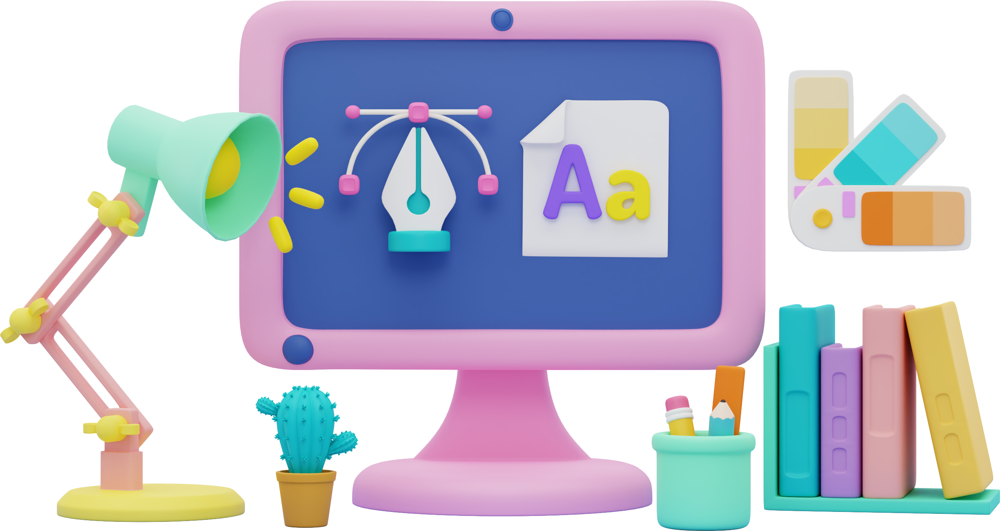
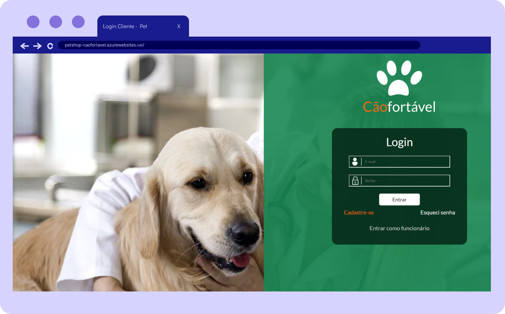
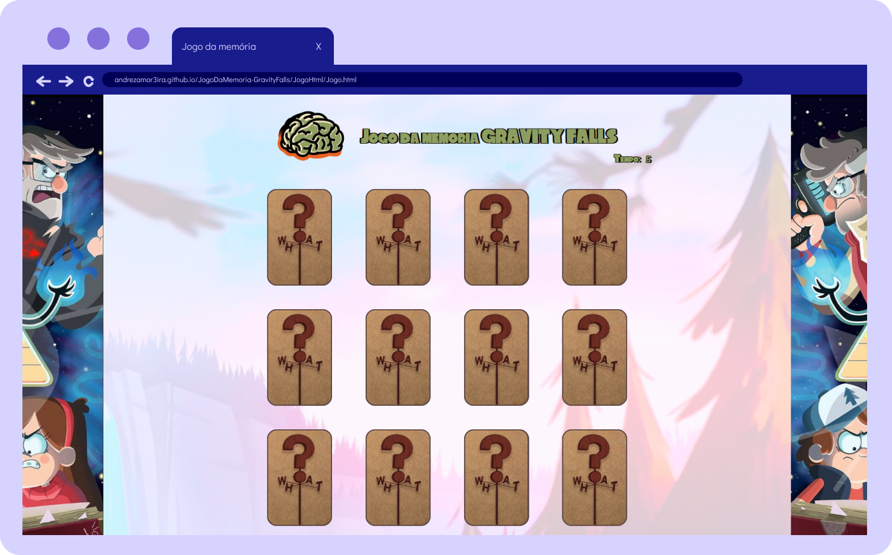
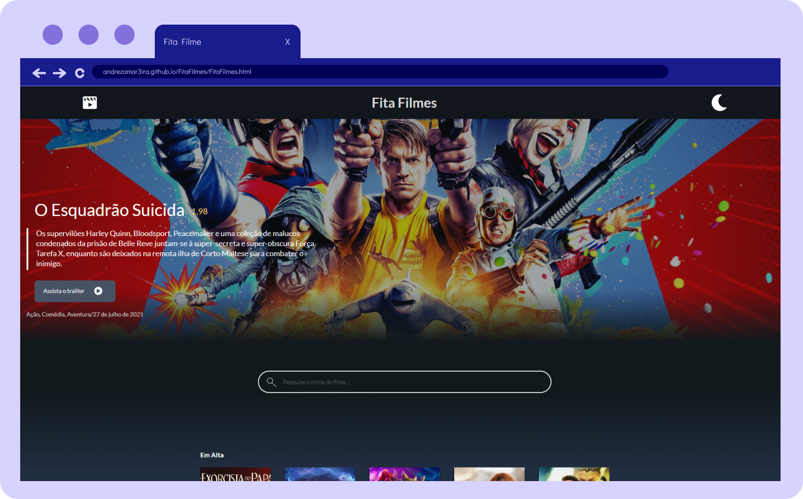

Formada em técnico de Desenvolvimento de Sistemas.
Com habilidades em: C, C#, SQL, Java, JavaScript, HTML, CSS, Asp.net.
Seja bem vindo(a)!!
Formada em técnico de Desenvolvimento de Sistemas.
Com habilidades em: C, C#, SQL, Java, JavaScript, HTML, CSS, Asp.net.


Atualmente, tenho 19 anos e moro em Salvador – Bahia. Sou formada em Técnico de Desenvolvimento de Sistema na Rede Senai CIMATEC, onde pude desenvolver diversas habilidades na área de programação, tanto de front-end quanto back-end. Com essa base sólida de conhecimentos adquiridos, continuo me aprofundando na área e já realizei projetos em linguagens C++, C#, CSS, Html, JavaScript e SQL, com o auxílio de recursos como APIs e o framework Asp.net. Fora do mundo dos códigos, sou uma apaixonada por jogos, especialmente aqueles com tramas cativantes, sou mãe de um cachorrinho chamado Luppy e adoro estimular minha criatividade através da arte de desenhar. Como resultado, tenho facilidade na criação e execução de designs Front-End. Se você quiser conferir algumas dessas minhas habilidades, veja meus projetos abaixo!
Pet Shop CãoFortável
C#, asp.net, css, javascript
Jogo da memória
Html, Css e JavaScript
Fita Filmes
Html, Css e JavaScript